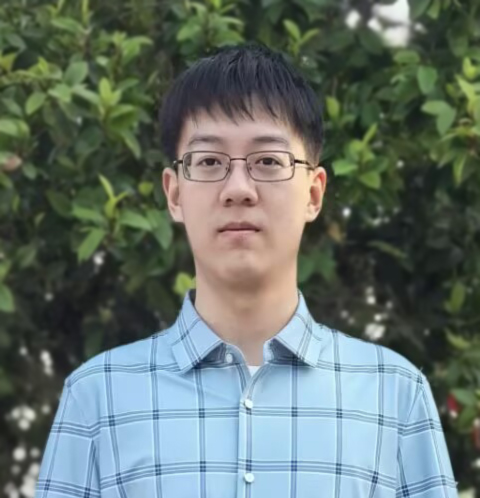

|
 |
田永铭 Yong-Ming Tian |
Currently I am a senior undergraduate student of School of Intelligence Science and Technology in Nanjing University and a member of LAMDA Group, led by professor Zhi-Hua Zhou. I have been recommended for admission to pursue an M.Sc. degree at the same school under the supervision of Assistant Professor Shao-Qun Zhang.
Neural Tangent Kernel.
Time Series Analysis.
* Equal contribution.
Qian Sun*, Yong-Ming Tian*, Jia-Wei Huang, Cheng Feng, and Shao-Qun Zhang. RMISC: A Large-scale Real-world Multivariate Corpus for Time Series Foundation Models. KDD 2027, Datasets and Benchmarks Track. Accepted (Cycle 1). [arXiv] [Code] [Dataset]
国家自然科学基金青年学生基础研究项目（项目号：625B1014）《基于深度神经核的深度学习表示和泛化理论》，2026.
National Scholarship, 2024.
Institution: School of Intelligent Science and Technology, Nanjing University, Suzhou 215163, China
Address: Nanjing University Suzhou Campus, No. 1520 Taihu Avenue, Huqiu District, Suzhou 215163, China